이용 안내
부동산 공공데이터는 기관마다 흩어져 있고 형식도 제각각입니다.
그걸 매일 받아다 실무에서 바로 읽히는 모양으로 모아 놓은 곳입니다.
쓰시다가 아쉬운 점을 알려주시면 그대로 반영합니다. 같이 만들어 가는 무료 정보 저장소라고 생각해 주세요.
첫 화면
검색창에 지역이나 단지 이름을 넣으면 바로 지도로 갑니다. 그 아래로 오늘의 시장 상황과 메뉴 바로가기가 이어집니다.
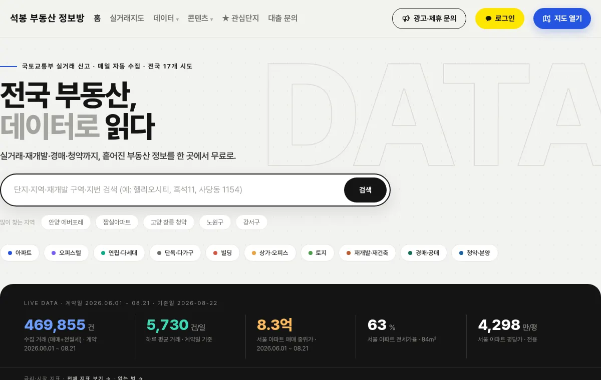
- 가운데 검색창은 단지·지역·지번을 다 받습니다. 「잠실주공5」처럼 줄여 써도 찾습니다
- 검은 띠의 숫자는 수집한 거래 건수·하루 평균·중위 가격·서울 아파트 평당가입니다
- 아래로 내리면 마켓 대시보드가 나옵니다. 지역별 평당가와 전세가율을 표로 훑을 수 있습니다
- 그 아래 타일이 전체 메뉴입니다. 어디에 무엇이 있는지 여기서 한눈에 보입니다
실거래지도
가장 많이 쓰시는 화면입니다. 전국에서 신고된 실거래를 지도 위에 그대로 얹었습니다. 아파트뿐 아니라 오피스텔·빌라·단독·상가·빌딩·토지까지 봅니다.
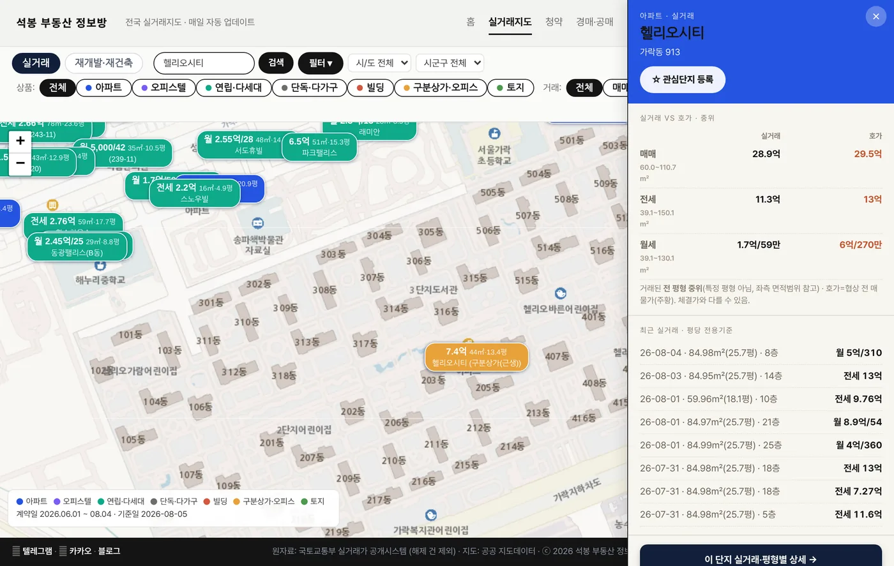
- 지도 위 말풍선 하나가 실제로 신고된 거래입니다. 금액과 면적이 바로 보입니다
- 왼쪽 목록은 지금 화면에 보이는 것만 모은 것입니다. 최신순·고가순·거래 많은 순으로 바꿉니다
- 위쪽에서 상품 종류와 거래유형(매매·전세·월세)을 고릅니다
- 필터에서 가격·면적·준공연도·층으로 더 좁힐 수 있습니다
- 말풍선을 누르면 그 단지의 실거래와 현재 호가가 한 카드에 나란히 열립니다
지도를 더 쓰는 법
지도 오른쪽에 도구 네 개가 있습니다. 켜고 끄면서 같은 자리를 다르게 볼 수 있습니다.
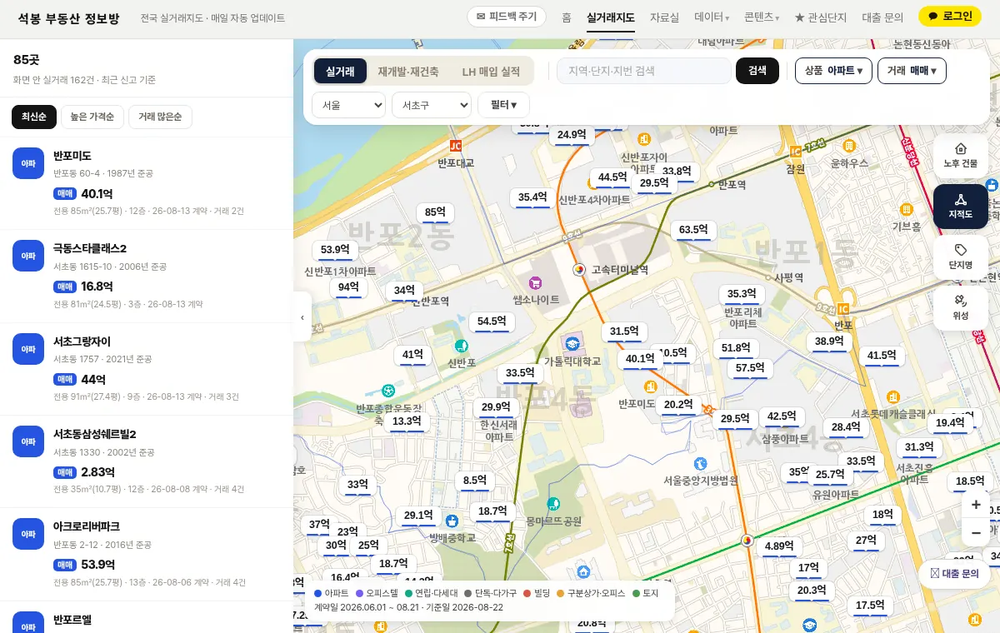
- 노후 건물 · 동네마다 오래된 주거 건물이 얼마나 되는지 색으로 칠합니다. 정비사업 여지를 가늠할 때 씁니다
- 지적도 · 필지 경계를 겹쳐 봅니다. 토지를 볼 때 옆 필지와의 관계가 바로 보입니다
- 단지명 · 말풍선에 단지 이름을 함께 띄웁니다. 처음 보는 동네에서 유용합니다
- 위성 · 배경을 위성 사진으로 바꿉니다. 실제 건물 배치와 도로 폭을 확인할 때
단지 상세
지도에서 단지를 누르고 들어가는 화면입니다. 그 단지 하나만 깊이 봅니다.
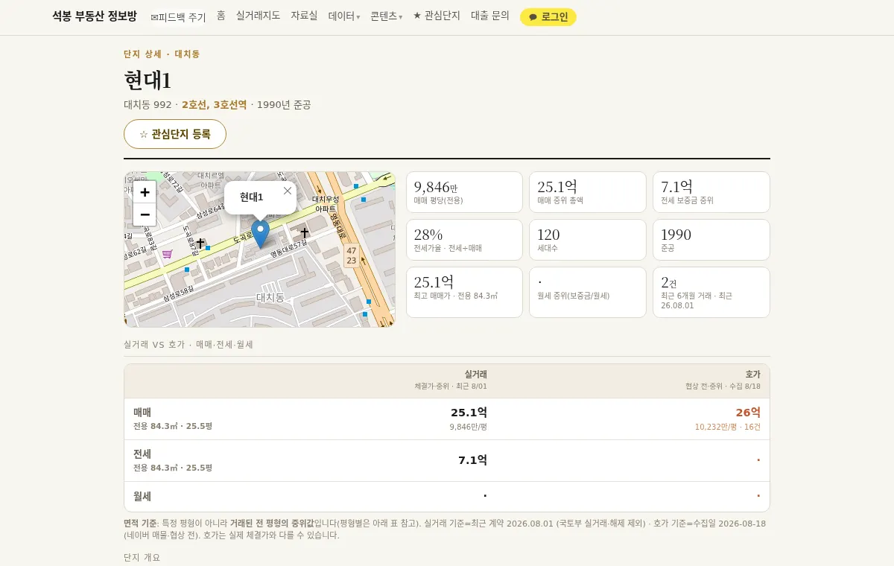
- 평형별 시세가 나뉘어 있습니다. 같은 단지라도 평형마다 값이 다릅니다
- 연도별 시세 추이는 과거 10년치 실거래에서 뽑은 것입니다
- 관리비와 은행 대출 한도 참고치도 함께 봅니다
- 가까운 지하철과 학교, 건축물대장까지 한 화면에 있습니다
재개발·재건축
지도 위쪽에서 모드를 바꾸면 정비구역이 뜹니다. 색이 사업 종류입니다. 빨강이 재개발, 파랑이 재건축입니다.
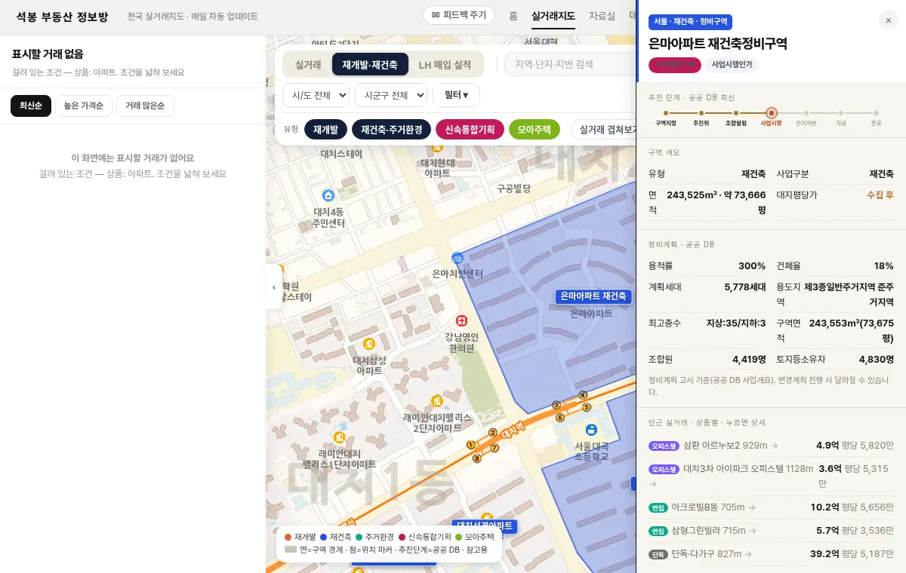
- 구역마다 추진 단계가 일곱 칸 막대로 보입니다. 지나온 칸은 채워져 있습니다
- 용적률·건폐율·예정 세대수 같은 정비계획이 확정된 곳은 숫자로 나옵니다
- 그 구역 법정동의 시세가 몇 년간 얼마나 올랐는지 그래프로 봅니다
- 구역 안팎의 최근 실거래도 함께 붙습니다
추진 단계는 이렇게 읽습니다
재개발·재건축은 어느 단계에 있느냐가 값을 좌우합니다.
- 구역지정 · 정비구역으로 묶인 단계입니다. 재건축은 안전진단이 여기 들어갑니다
- 추진위 · 주민들이 조합을 만들 준비 기구를 꾸린 단계입니다
- 조합설립 · 사업 주체가 생긴 것이라 여기서 한 번 값이 움직입니다
- 사업시행 · 무엇을 몇 채 짓겠다는 계획을 인가받았습니다
- 관리처분 · 내 몫과 추가 분담금이 확정됩니다. 불확실성이 크게 줄어드는 지점입니다
- 착공 · 이주와 철거를 마치고 공사가 시작됩니다
- 준공 · 입주입니다
LH 매입
주택을 지어 LH에 넘기는 사업을 검토하는 분들을 위한 화면입니다. 진단·실적·공고 세 갈래로 나뉩니다.
셀프진단 · 계약 전에 걸리는 것부터
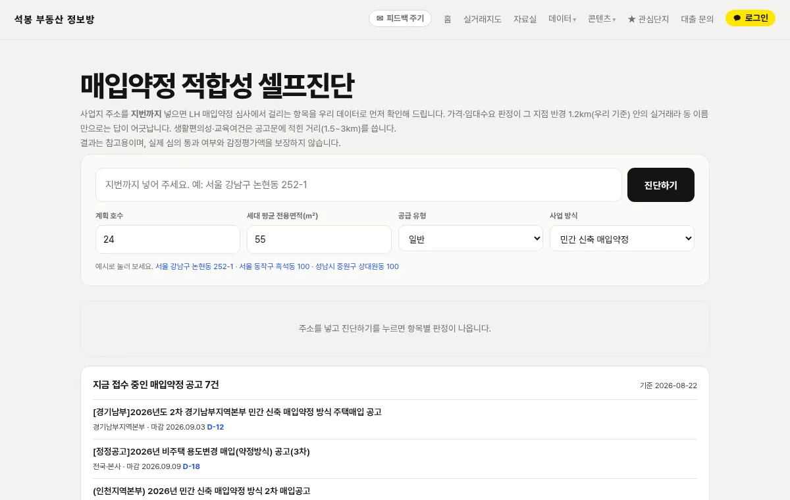
- 주소를 지번까지 넣으면 관할 지역본부부터 면적 요건까지 자동으로 판정합니다
- 제외 지구인지, 최소 매입 호수를 넘는지, 임대수요와 생활편의성은 어떤지 항목별로 봅니다
- 지역본부 요건 비교표가 따로 있습니다. 지역마다 요건이 다릅니다
- 검토한 사업지를 저장해 두면 여러 곳을 나란히 비교할 수 있습니다
매입 실적 지도 · LH 가 실제로 산 자리
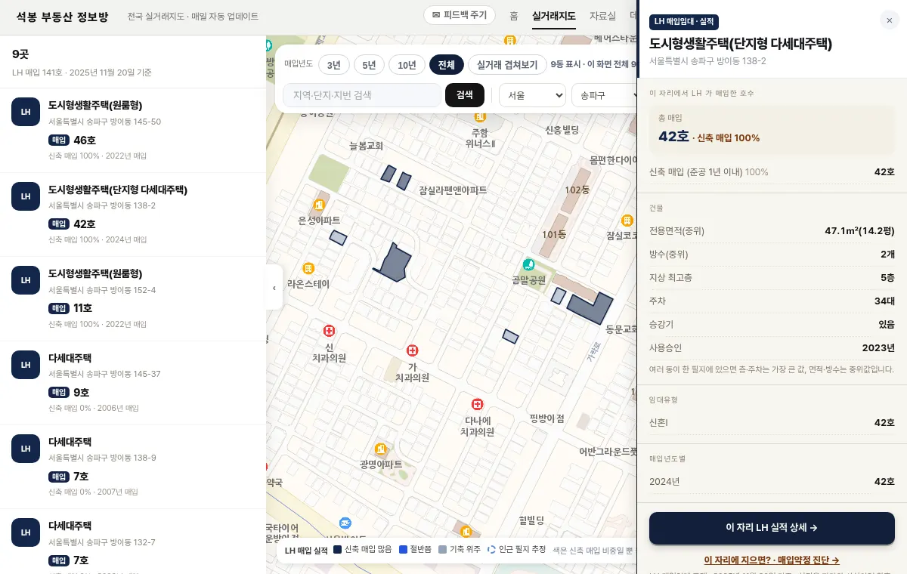
- 실거래지도 위쪽에서 LH 매입 실적 모드로 바꾸면 나옵니다
- 색이 진할수록 신축 매입(준공 1년 이내에 사들인 것) 비중이 높은 자리입니다
- 필터로 주택유형·전용면적·주차·층수·승강기·임대유형·매입 호수를 좁힙니다. 청년이나 신혼·신생아 물량만 골라 볼 수도 있습니다
- 매입년도는 기본이 전체입니다. 최근 3년만 보려면 위쪽 칩에서 바꾸면 됩니다
- 카드에서 실적 상세로 들어가면 그 동네 전체 매입 추이와 주변 임대시세, 표면 수익률까지 봅니다
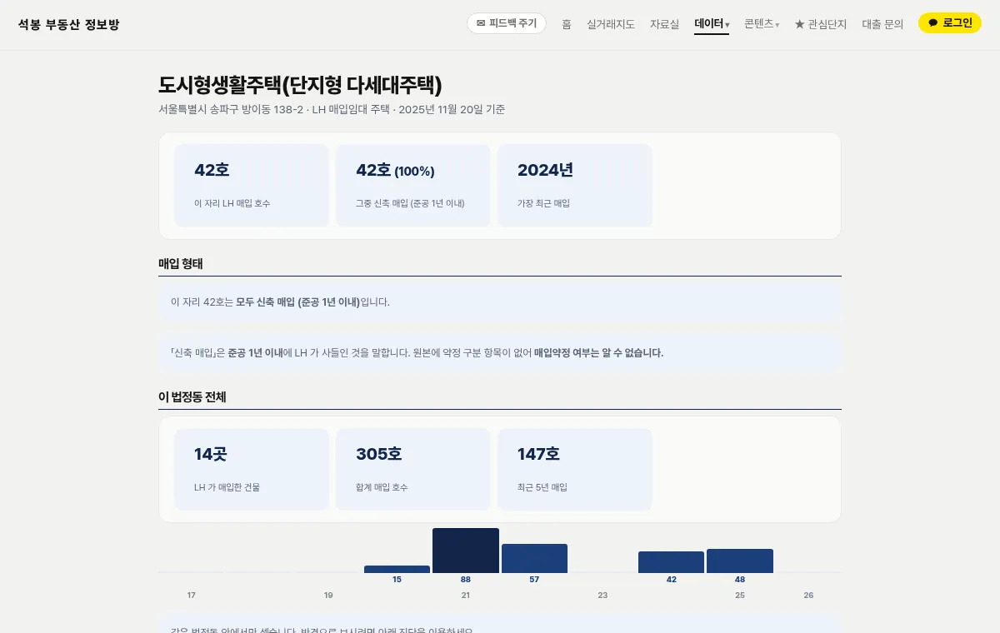
땅값 · 내 땅 담보가치 조회
토지를 가지고 계시거나 사려는 분을 위한 화면입니다. 지번 주소 하나만 넣으면 그 필지의 담보 판단에 필요한 공공자료를 한 번에 모아 보여드립니다.
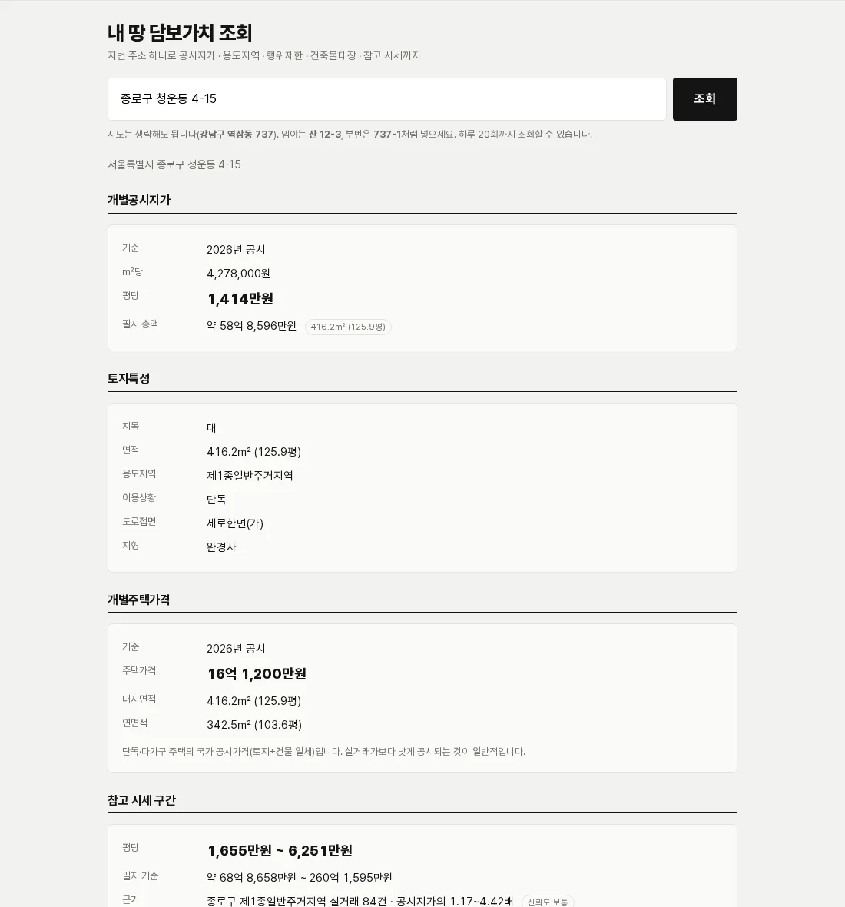
- 개별공시지가를 ㎡당·평당·필지 총액으로 바로 환산해 줍니다
- 단독·다가구 필지는 개별주택가격(토지와 건물을 합친 국가 공시가격)이 함께 나옵니다
- 행위제한 목록에서 개발제한·군사보호처럼 값을 깎는 규제를 미리 확인합니다
- 건축물대장은 건폐율·용적률·층별 구성·주차까지 붙습니다. 건물이 옆 필지에 걸쳐 있으면 그것도 알려 드립니다
- 참고 시세 구간은 같은 지역·지목·용도지역의 실거래가 공시지가의 몇 배에 거래됐는지로 계산한 통계 구간입니다
- 지도에서 상품을 토지로 바꾸면 실거래가 일어난 필지를 지번까지 확인할 수 있습니다
- 카카오 로그인 후 하루 20회까지 조회할 수 있습니다 (무료)
청약
접수 중이거나 곧 나올 분양 공고를 모았습니다. 공고마다 일정·분양가·경쟁률이 붙습니다.
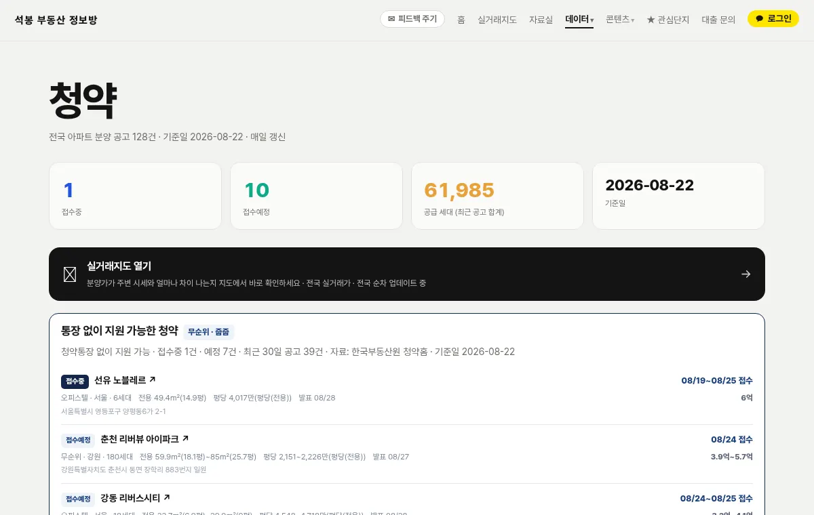
- 청약 접수일과 당첨자 발표일 등 일정을 놓치지 않게 정리했습니다
- 1순위 경쟁률은 1순위 접수 건수를 일반공급 세대수로 나눈 값입니다(2순위·특별공급 미포함)
- 평형별 분양가를 그대로 싣습니다
- 주변 실거래 보기를 누르면 그 자리 지도로 넘어갑니다. 분양가가 주변 시세와 견줘 어떤지 바로 비교됩니다
통장 없이 지원 가능한 청약 (무순위·줍줍)
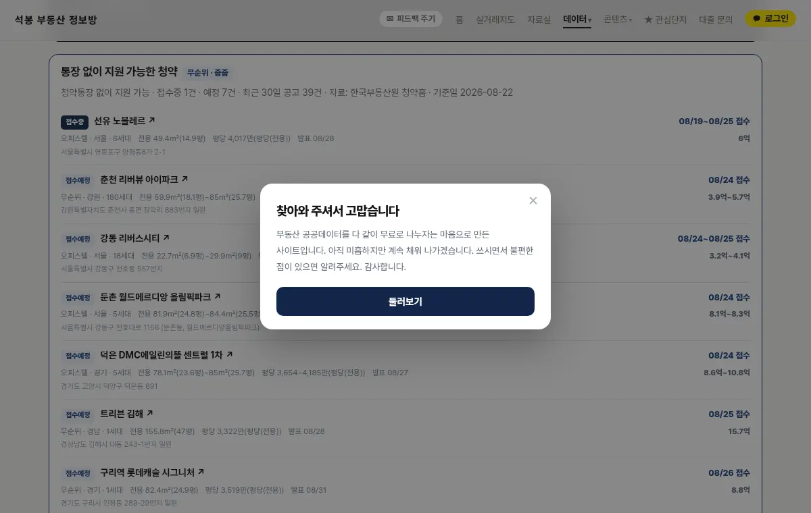
- 계약 취소분과 잔여 세대라 청약통장과 가점이 필요 없습니다
- 물량이 적고 접수 기간이 짧습니다. 오늘 기준 접수중·예정 건수를 위에 적어 뒀습니다
- 홈 첫 화면에서도 바로 닿을 수 있게 띠를 붙여 두었습니다
경매·공매
법원 경매와 캠코 공매의 낙찰 결과를 통계로 봅니다.
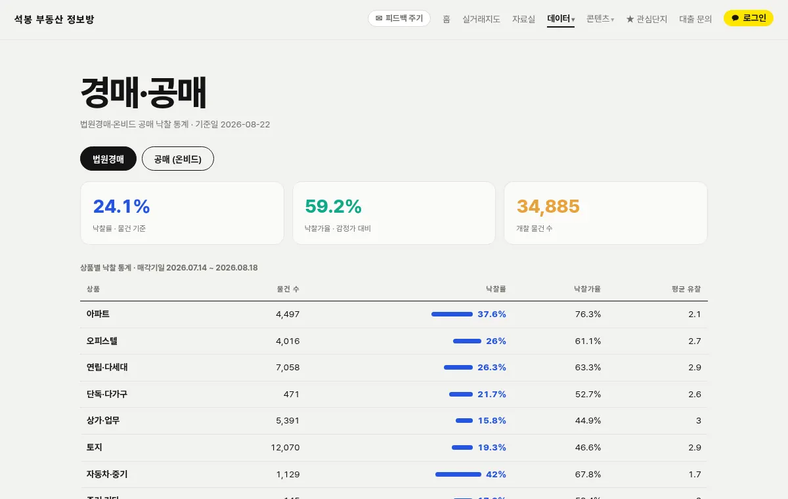
- 낙찰률은 나온 물건 중 실제로 팔린 비율입니다
- 낙찰가율은 감정가 대비 얼마에 팔렸는지입니다
- 지역별·물건 종류별로 나눠 보면 어디가 잘 나가는지 드러납니다
- 눈에 띄는 매각 건은 따로 골라 두었습니다
자료실
화면으로 보는 것과 별개로, 모아 둔 자료를 엑셀 파일로 받아 가실 수 있습니다. 직접 표를 짜서 분석하시는 분들을 위한 곳입니다.
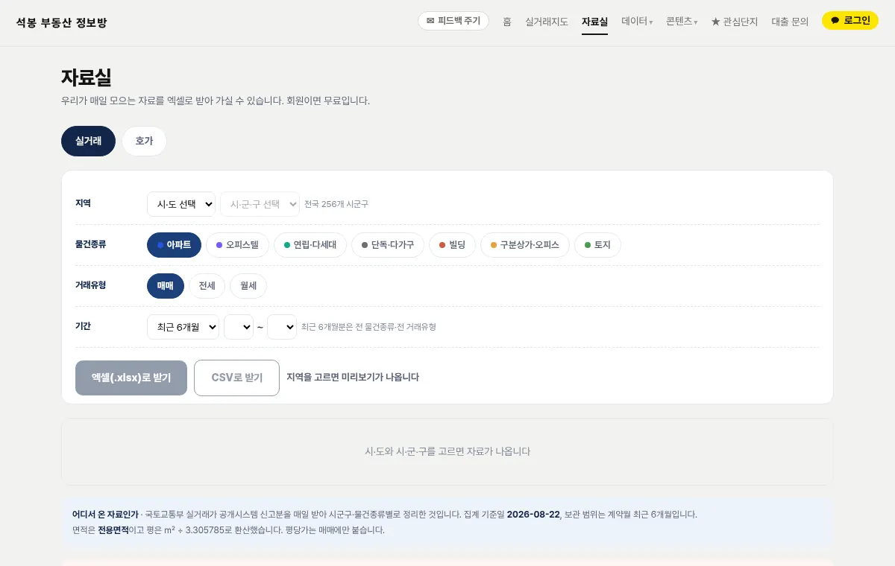
- 실거래와 호가 두 갈래입니다. 실거래는 국토교통부 신고분, 호가는 매물로 나온 값입니다
- 과거 자료는 2021년부터 있습니다. 아파트는 매매와 전월세를, 나머지(토지·연립다세대·단독다가구·상가·오피스·공장창고)는 매매를 받으실 수 있습니다
- 지역은 시군구 단위로, 기간은 한 번에 최대 1년치까지 받습니다
- 토지와 단독·다가구는 국토교통부가 지번을 가려서 줍니다(3* 형태). 저희가 공공 필지 자료와 맞춰 채우는 중입니다
- 엑셀(.xlsx)과 CSV 둘 다 있습니다
- 내려받기는 회원 로그인이 필요합니다. 무료입니다
- 호가는 단지별로 집계한 값을 드립니다. 개별 매물 정보는 배포하지 않습니다
금리·지표
부동산을 볼 때 같이 봐야 하는 숫자들을 한 화면에 모았습니다. 뉴스에 흩어진 지표를 찾아다니지 않아도 됩니다.
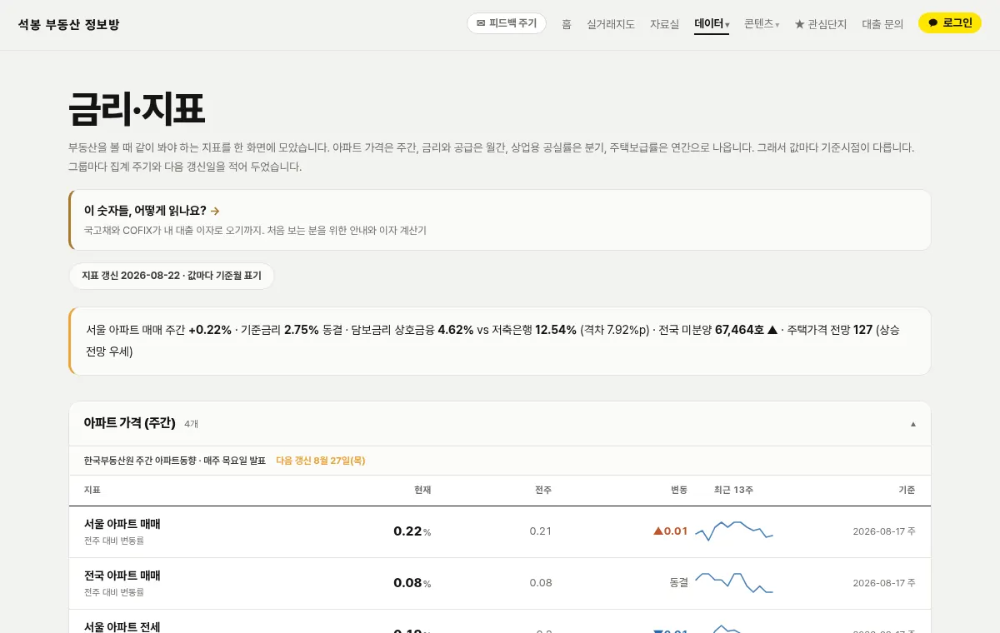
- 아파트 주간 가격부터 기준금리·국고채·환율은 매일 새로 받습니다
- 한국 금리 옆에 미국 정책금리와 국채를 같이 놓았습니다. 두 나라가 같은 방향인지 갈렸는지가 국내 대출 이자로 이어집니다
- 1금융과 2금융 담보대출 금리를 나란히 봅니다. 격차가 곧 조달 비용 차이입니다
- 인허가·착공·준공과 미분양을 같은 그룹에 두어 공급의 원인과 결과를 함께 봅니다
- 오피스·상가 공실률과 임대료도 분기마다 갱신됩니다
리포트
그날그날의 실거래를 읽고 쓴 글을 모아 둡니다.
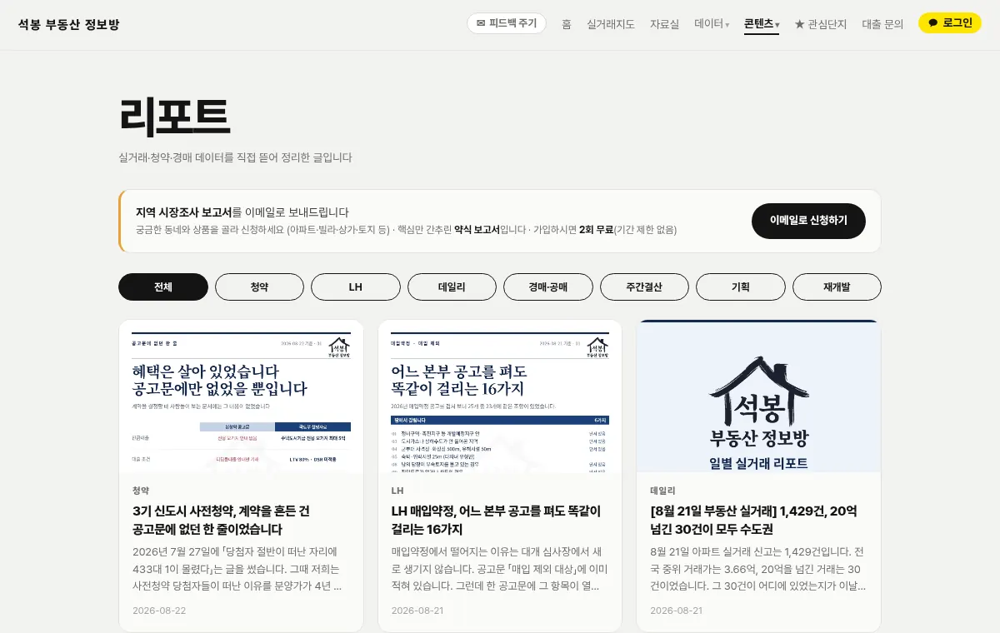
- 데일리는 그날 신고된 거래에서 눈에 띄는 것을 짚습니다
- 주간결산은 한 주를 묶어 봅니다
- 청약·LH·경매공매·재개발은 주제별로 따로 씁니다
- 글에서 언급한 단지는 눌러서 바로 지도로 갈 수 있습니다
- 글 앞부분은 누구나 읽고, 전문은 카카오 로그인 후 보입니다 (무료)
- 가입하시면 지역 시장조사 보고서(핵심만 간추린 약식)를 2회 무료로 요청하실 수 있습니다
실시간 인기
거래가 몰린 단지와 값이 오른 지역을 따로 뽑아 둡니다. 어디가 움직이는지 빠르게 훑을 때 씁니다.
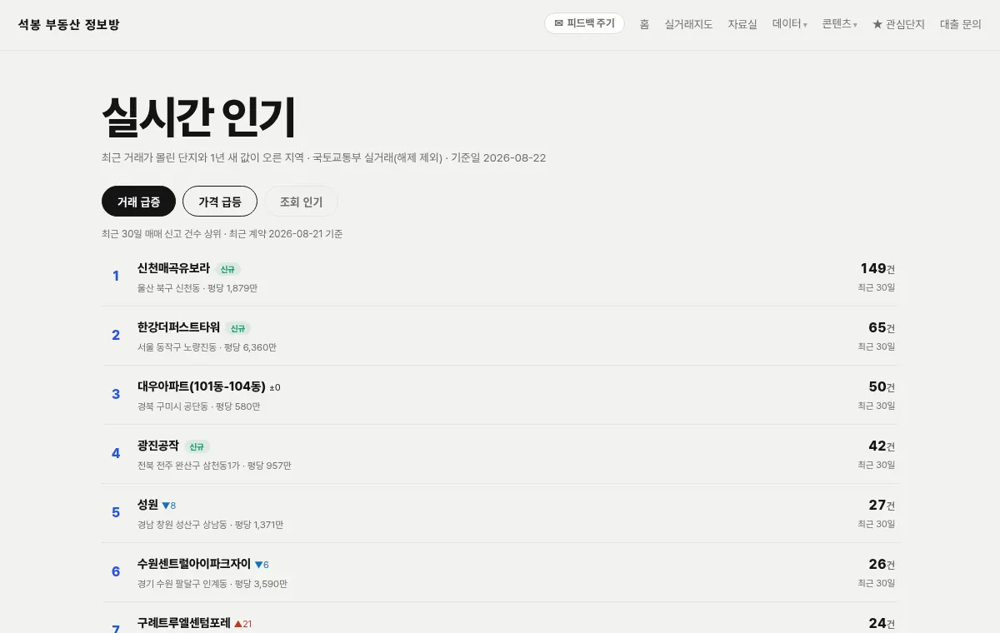
- 거래 급증은 최근 30일 매매 신고 건수가 많은 단지 순입니다
- 가격 급등은 시군구별 평당가 중위값을 전년 같은 달과 비교한 상승률입니다
- 표본이 적은 지역과 단지는 뺐습니다. 신축 입주장처럼 등기가 한꺼번에 몰리는 경우가 섞일 수 있습니다
관심단지와 내 정보
눈여겨보는 단지를 모아 두는 곳입니다. 여기와 자료실 내려받기만 카카오 로그인이 필요합니다.
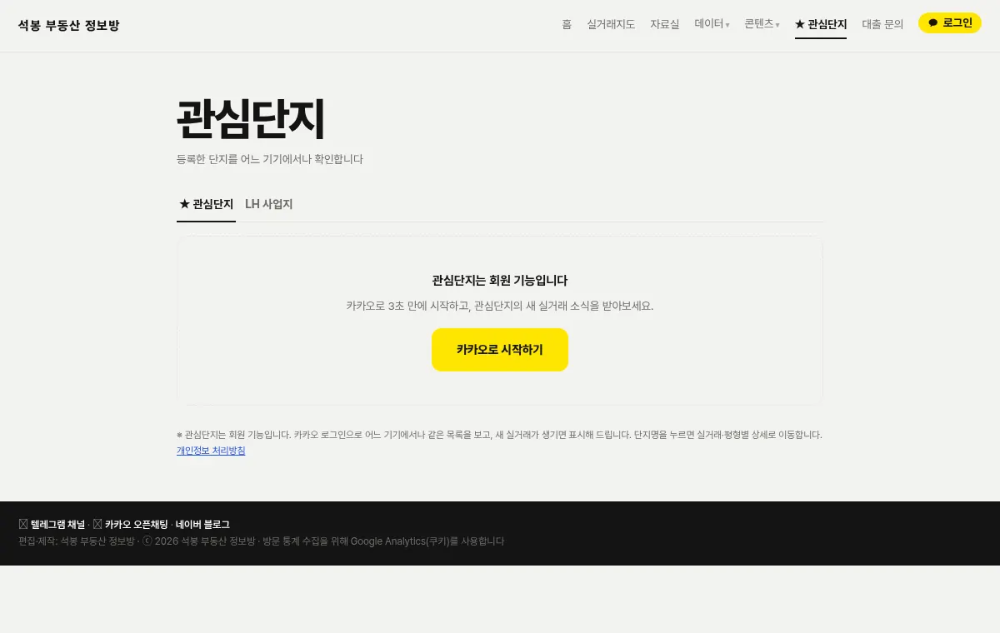
- 지도나 단지 화면에서 ☆ 버튼을 누르면 담깁니다
- 로그인하면 휴대폰에서도 같은 목록이 보입니다
- 담아 둔 단지에 새 거래가 생기면 표시해 드립니다
- LH 사업지를 저장하신 분은 옆 탭에서 함께 관리하실 수 있습니다
- 내 정보에서 알림 받을 이메일을 따로 지정하실 수 있습니다
휴대폰에서 쓰기
따로 앱을 받지 않아도 됩니다. 홈 화면에 아이콘을 두면 주소창 없이 앱처럼 열립니다.
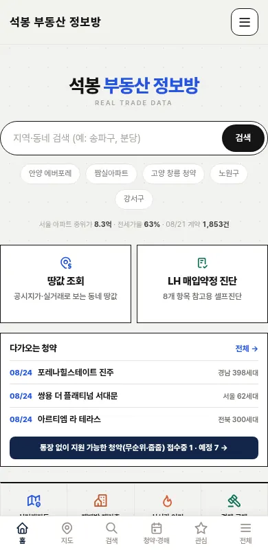
불편한 점을 알려주세요
이 사이트는 쓰시는 분들 이야기를 듣고 고쳐 가며 만들고 있습니다.
숫자가 이상하거나, 찾는 자료가 없거나, 화면이 불편하시면 알려주세요.
주시는 피드백은 최선을 다해 반영하겠습니다.
✉ 피드백 주기(모바일은 아래 「전체」 안에 있습니다)를 누르시거나, 메일(iamsc45@gmail.com)로 보내주셔도 됩니다.
참고용 정보이며 투자 권유가 아닙니다. 공공기관이 공개한 자료를 정리한 것입니다.